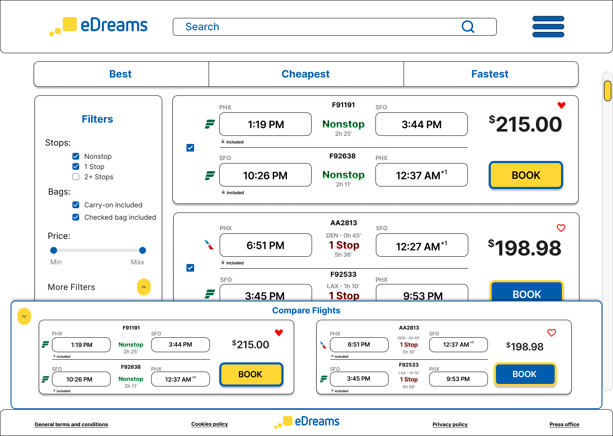
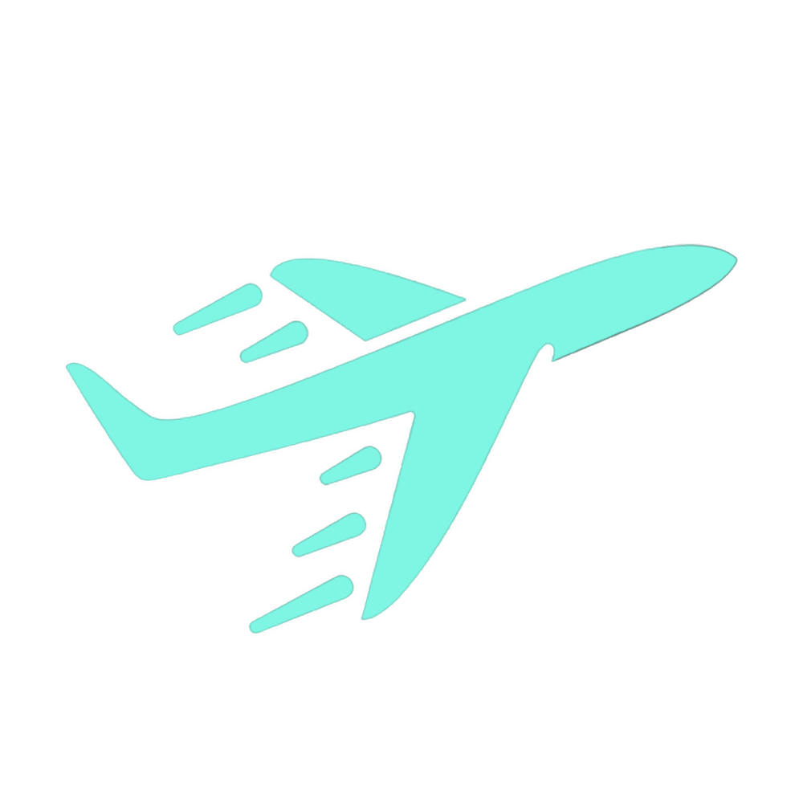
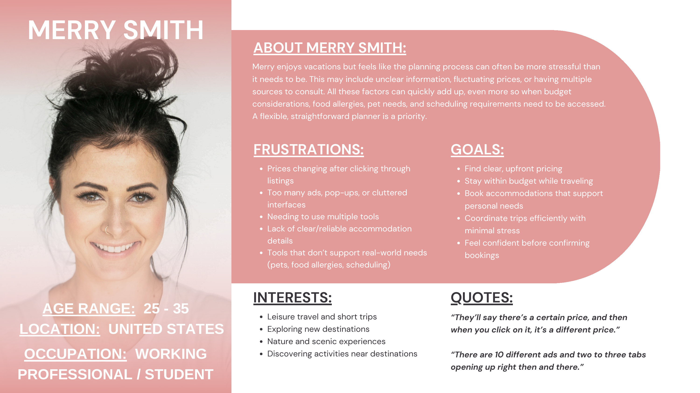
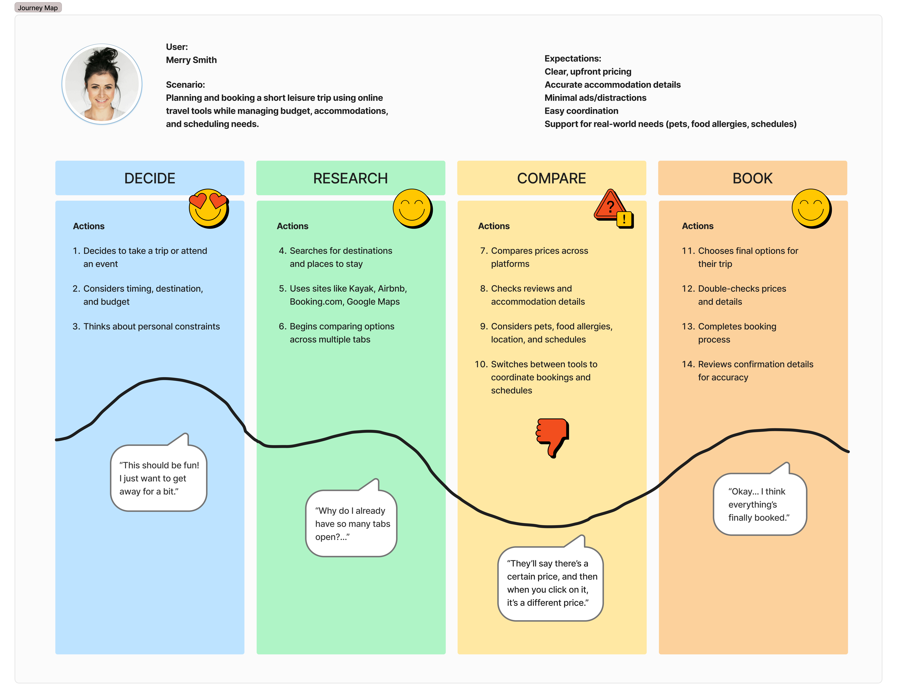
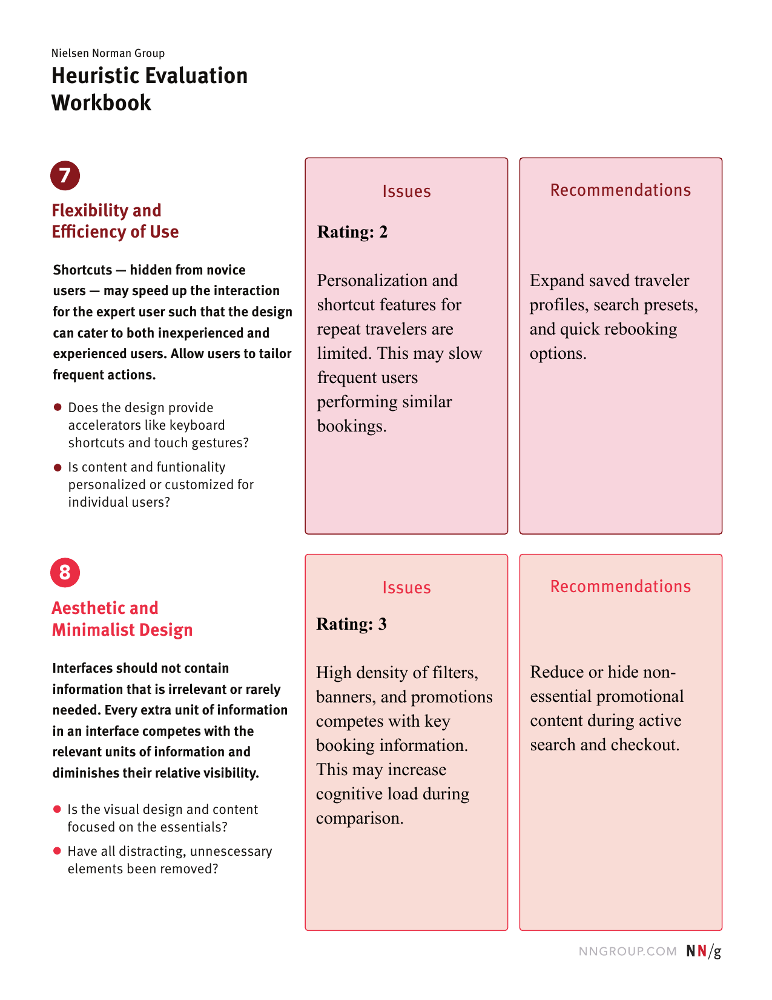
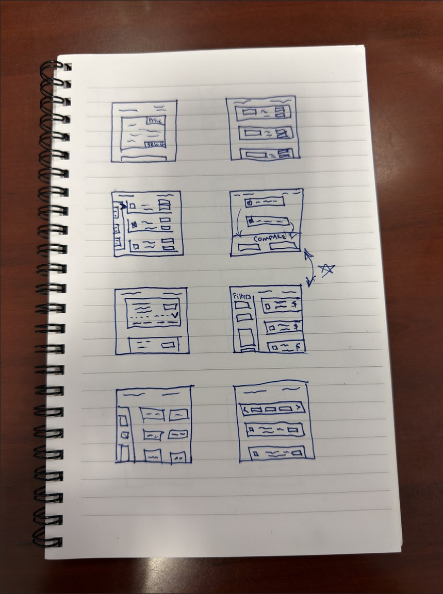
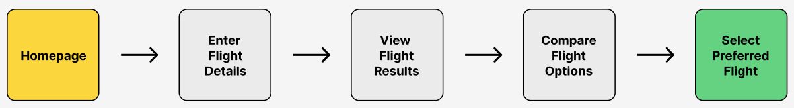
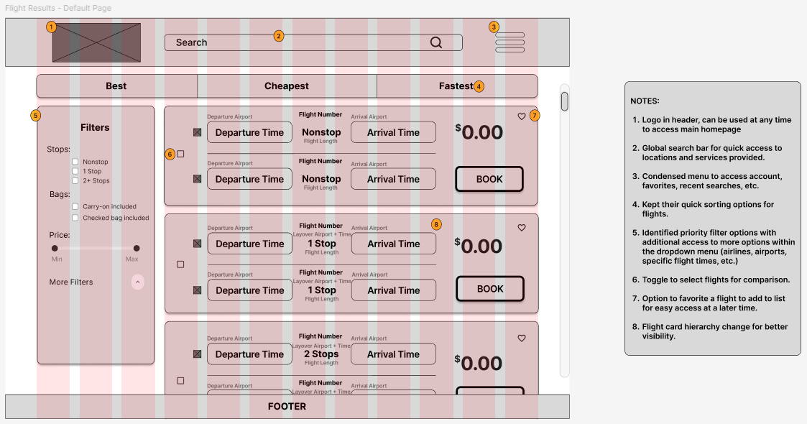
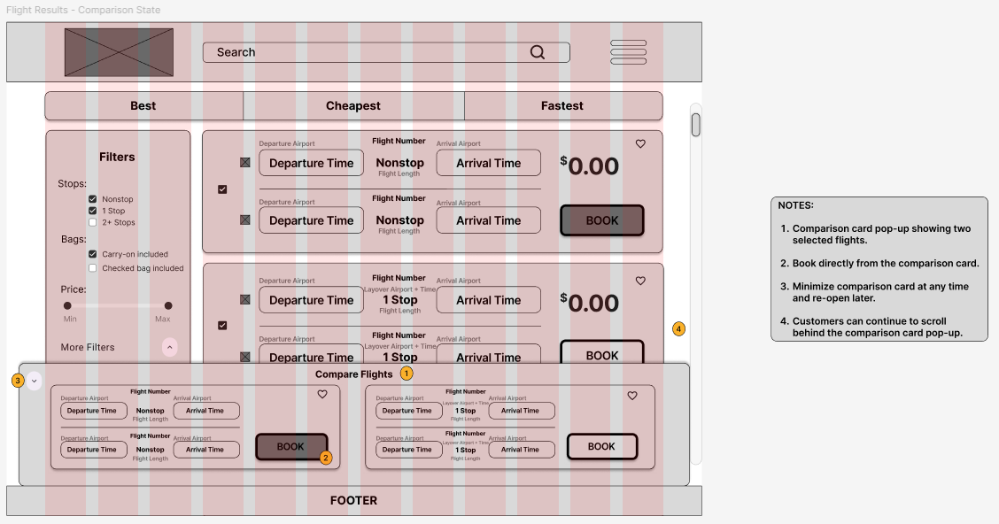

Final design — default results view

Final design — comparison panel active
UX Case Study · GIT 340 · Spring 2026

eDreams.net is a travel booking site most people have never heard of. I chose it for a class project, picked the flight results page, and started looking for what was broken.
It surfaced fast. Comparing flights meant scrolling through cards that looked nearly identical, holding details in your head, and hoping you remembered which option was better by the time you reached the bottom.
Users rated the ease of comparing options at 1.8 out of 5. That number became the project.
How do you fix a flight results page so users can actually make a decision — without rebuilding the whole product around them?
Three interviews: a 29-year-old who travels frequently, a 45-year-old focused on flexibility, and a 70-year-old who relies on desktop. Different contexts, same complaints.
Pricing felt deceptive. The interface was cluttered. Planning one trip meant switching between multiple tools.
From the interviews I built a persona. Merry Smith, late 20s to mid-30s, working professional, budget-conscious, usually under time pressure. She became the lens.

User persona — Merry Smith

Journey map — Merry Smith
Before bringing in real users, I evaluated the flight results page against Nielsen Norman's 10 heuristics.
Two violations stood out. The page was visually dense with promotions and filters competing against the actual booking content. And there was nothing to help repeat travelers move faster — every session started from zero.

Nielsen Norman heuristic evaluation — eDreams.net
Three participants, three scenarios: find a round-trip flight, explore deals, navigate to transportation. Think-aloud throughout. I wrote the test script, the questionnaires, and the observation sheets myself.
Then I sat with each person and watched the site fight them.
Cards were visually identical. No icons differentiated nonstop from connecting. No side-by-side comparison existed. Users scrolled back and forth, relying on memory, still unsure. The oldest participant briefly convinced himself he had left the site entirely when the nav disappeared on a secondary page.
No way to save or compare flights side by side. Users had to rely on memory and repeated scrolling to make a decision.
Identical icons for nonstop and connecting flights forced users to read small text to distinguish options — especially painful for older users.
Prices changed after selection, and baggage inclusions weren't visible at the results level. Trust dropped immediately.
Global navigation disappeared on secondary pages. One participant re-entered the site URL from the address bar to recover.
One problem, clearly: users couldn't compare flights without memorizing them. Everything else followed from solving that.
I ran Crazy 8s to move fast. The concept that kept winning was a floating comparison panel that appears after selecting two or more flights. It sits at the bottom of the screen without blocking the results list. You can book directly from it.

Crazy 8s — 8 concepts in 8 minutes
Five steps from the homepage to a selected flight. The existing design was breaking at step three.

Task flow — Homepage to flight selection

Wireframe — default results page

Wireframe — comparison panel active
This wasn't a rebrand. The goal was a targeted fix using the structure that already existed.
Stop type now reads at a glance: Nonstop, 1 Stop, 2+ Stops. Filters were reorganized around what participants looked for first. The comparison panel lets users select, review, and book without ever leaving the results list.
Every change traces to something a real person said or did in testing.
Final design — default results view

Final design — comparison panel active
The comparison panel wasn't my idea. It came from watching three people try to hold flight details in their heads and fail. I just gave the problem a shape.
Every time I wanted to change something because it looked better, I had to stop and ask whether the research supported it. That discipline made the final design stronger.
If I had more time, I would have run a second round of usability testing on the redesign itself. I know what I set out to fix. I don't know with certainty how much I fixed it. That's the honest gap in this study, and the first thing I'd close.
Final grade: 100/100.